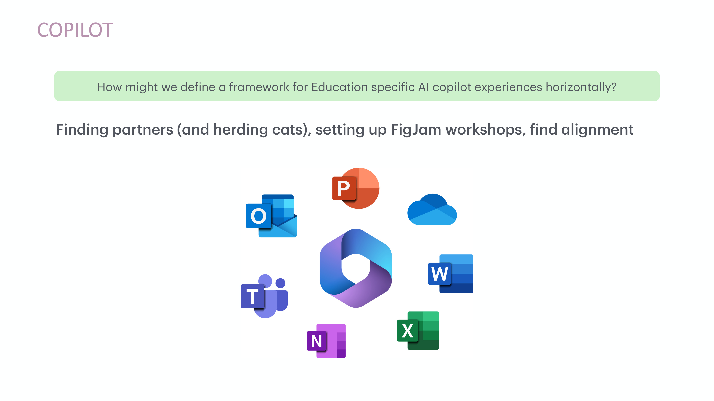
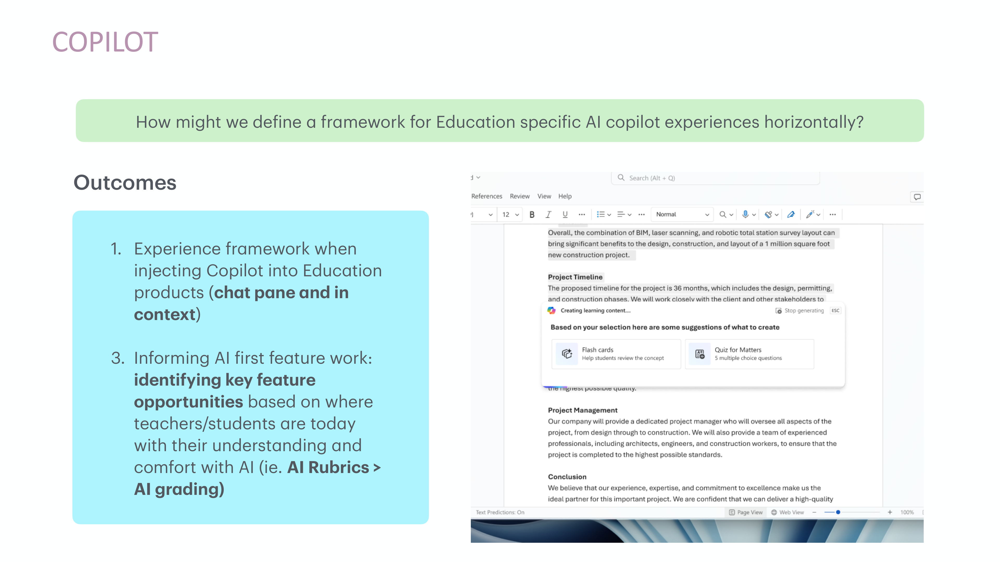
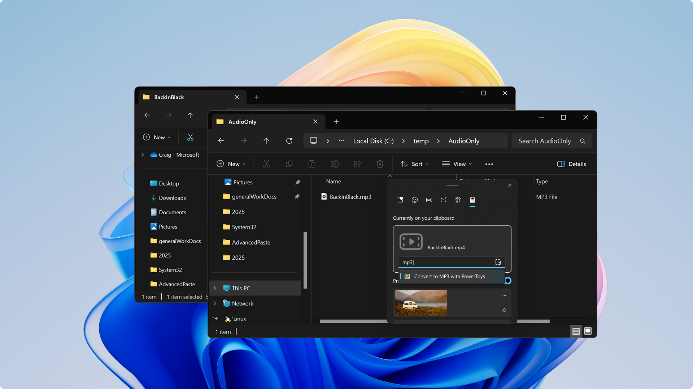
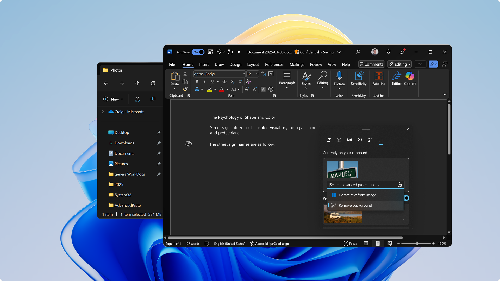
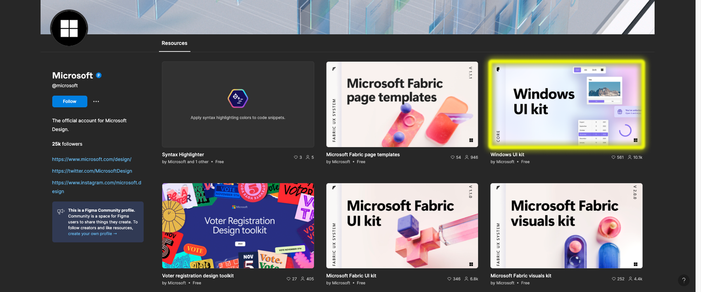

Case Study · Microsoft Windows
Bringing AI into Windows, without losing trust
Three stories from Windows and M365: a horizontal EDU Copilot framework spanning Word, PowerPoint, Excel, and Outlook; Advanced Paste, a PowerToys favorite promoted into core Windows; and the community-facing Windows UI Library.
EDU Copilot is a Copilot with education-specific prompts, trained on data specific to a given class and its students, so it can behave like a teaching assistant rather than a generic chat window. The hard part wasn't any single surface — it was that EDU Copilot had to work with Grades and Assignments and follow a teacher seamlessly across the entire M365 suite, which meant partnering directly with the design teams for Word, PowerPoint, Excel, and Outlook to keep the experience consistent everywhere it showed up.


Before any UI work, the job was mostly organizational: finding the right partners across Word, PowerPoint, Excel, Outlook, and Teams — herding cats, some days — and running FigJam workshops until the group could agree on a shared direction.
Research
Trust Was the Real Constraint, Not Capability
The open questions going in were less about what Copilot could technically do and more about the people on the other side of it: how educators already think about AI, which problems they actually wanted help with, and how much they trusted an AI suggestion enough to act on it.

Two things came out of it: an experience framework for injecting Copilot into Education products consistently — as a chat pane and inline, in context — and a way to prioritize AI-first feature work based on where teachers and students actually were with their comfort in AI, rather than where the technology was capable of going. That's why AI-assisted rubrics shipped as a starting point ahead of full AI grading — it matched the trust educators already had, instead of asking for more than they were ready to give.
Advanced Paste started as a PowerToys feature and got so much traction we brought it into the core Windows experience. It lets you copy any content, transform it, and then paste the result — removing the background from an image, translating text into another language, or transcribing a video on the fly, all right before you paste.


Outside of product work, I maintained our community-facing Figma library for Windows app developers and designers — keeping it current with the latest Figma best practices and adding new components as the platform grew.
